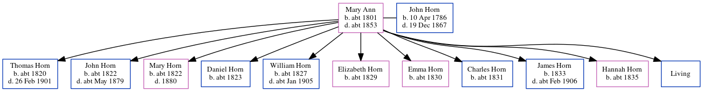

Mary Horn c1801 - c1853
[ Home ] | [ Calendar ] | [ Surnames Index ] | [ Census Index ] | [ Family History ]Mary Ann, the 3 times great-grandmother of Nigel Horne, was born in Margate, Kent, England c. 18011,2 and had 11 children with John Horn (a laborer): Thomas, John, Mary Ann, Daniel, William, Elizabeth Emma, Emma, Charles, James, Hannah and George, along with 1 surviving child.
During her life, she was living at her birthplace in 18411; and at Chapel Hill in Margate on Jun 6, 18415 and on Mar 30, 18512.
She died c. 18533 and was buried in Margate on Apr 28, 18533.
Children
- Thomas was born c. 1820
- John was born c. 1822
- Mary Ann was born c. 1822
- Daniel was born c. 1823
- William was born c. 1827
- Elizabeth Emma was born c. 1829
- Emma was born c. 1830
- Charles was born c. 1831
- James was born in 1833
- Hannah was born c. 1835
Citations
- 1841 England Census Online publication - Provo, UT, USA: The Generations Network, Inc., 2006.Original data - Census Returns of England and Wales, 1841. Kew, Surrey, England: The National Archives of the UK (TNA): Public Record Office (PRO), 1841. Data imaged from the National
- 1851 England Census Online publication - Provo, UT, USA: The Generations Network, Inc., 2005.Original data - Census Returns of England and Wales, 1851. Kew, Surrey, England: The National Archives of the UK (TNA): Public Record Office (PRO), 1851. Data imaged from the National (Relation to Head of House: Wife)
- England, Select Deaths and Burials, 1538-1991 Ancestry.com Operations, Inc.
- 1851 England, Wales & Scotland Census - Findmypast (was age 54 and the wife of the head of the household)
- 1841 England, Wales & Scotland Census - Findmypast (was age 40 and the wife of the head of the household)
Media
1851 England, Wales & Scotland Census - GBC/1851/0005885655
Family Tree
Generated by ged2site. Last updated on Jun 11, 2024